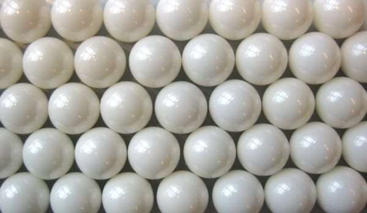

Les biocéramiques : inertes ou résorbables
Une tête de hanche en céramique doit rester intacte pendant des décennies. Un substitut osseux en céramique, au contraire, doit disparaître peu à peu pendant que l'os repousse. Deux céramiques, deux stratégies opposées.
Le chapitre en bref
Le chapitre 4 a présenté les céramiques en général (liaisons, oxydes, nitrures, carbures). Ici, on regarde celles qu'on implante :
- Les biocéramiques (cette page) : définition, bio-inertes ou résorbables, propriétés.
- Alumine et zircone : les têtes et couples de friction des prothèses de hanche.
- Le carbone pyrolytique : les valves cardiaques.
- Les céramiques résorbables : hydroxyapatite, phosphate tricalcique, revêtements et substituts osseux.
Intuition
Une céramique tient ses atomes par des liaisons ioniques et covalentes, fortes et dirigées. Elle est donc très dure, très stable, résiste à l'usure et à la compression, mais ne se déforme pas avant de casser. Pour l'implant, on choisit ensuite : soit une céramique qui ne bouge pas (bio-inerte), soit une céramique proche de l'os, que le corps dissout et remplace (résorbable).
Formalisation
La céramique est l'art et la science de fabriquer des pièces solides composées principalement de matériau non organique et non métallique [Kingery et al., 1976]. Les céramiques sont des matériaux réfractaires (résistant à la chaleur), polycristallins, inorganiques, contenant des silicates, des oxydes métalliques, des carbures, divers hydrures réfractaires, des sulfures et des séléniures. Elles sont obtenues par frittage : agglomération de poudres par chauffage sous forte pression.
Les céramiques polycristallines n'ont pas de phase vitreuse : il n'y a que des cristaux (d'alumine ou de zircone, par exemple) condensés par frittage. Elles sont extrêmement résistantes mais complètement opaques.
On a constaté que les céramiques et leurs composites peuvent réparer ou remplacer plusieurs organes, en particulier l'os : ce sont les biocéramiques. Deux catégories :
| Catégorie | Exemples du cours |
|---|---|
| bio-inertes ou non résorbables (relativement inertes) | alumine, zircone, nitrures de silicium, fibres de carbone, carbone pyrolytique |
| biodégradables ou résorbables (non inertes) | hydroxyapatites denses, phosphate tricalcique |
(La diapositive écrit « nitrures de silicone » : il s'agit des nitrures de silicium, \(\mathrm{Si_3N_4}\).)
Propriétés des biocéramiques
| Mécaniques | Biologiques | Autres |
|---|---|---|
| très grande résistance à la compression ; très dures ; bonne résistance à l'usure ; grande résistance au cisaillement ; non résilientes (ne résistent pas au choc), donc fragiles ; non ductiles (pas de déformation plastique) | non toxiques ; non cancérigènes ; non allergiques ; non inflammatoires ; biocompatibles ; biofonctionnelles pendant toute la durée d'implantation | mauvais conducteurs d'électricité ; mauvais conducteurs de chaleur ; température de fusion très élevée |
Problèmes mal résolus
Avec les céramiques : les mécanismes de dégradation, la durabilité, la résistance à la fracture, l'activité de surface, l'adhésion des protéines ou des cellules en surface. Avec les céramiques biorésorbables, en plus : la mesure et le contrôle de la biorésorption et de son effet sur le tissu local, et la calcification (dépôt pathologique de sels de calcium, surtout d'hydroxyapatite, dans les tissus mous).
Rappel : un composé organique contient du carbone, presque toujours associé à l'hydrogène. Quelques composés du carbone sont pourtant inorganiques : CO, CO₂, les carbonates, les cyanures, les carbures métalliques ; et les corps simples du carbone (graphite, diamant) sont inorganiques. C'est pourquoi le carbone pyrolytique est une céramique.

Exemple
Exemple ajouté. Une tête de hanche en alumine doit garder sa forme 20 ans : on veut une céramique bio-inerte, dure et résistante à l'usure. Un bloc de comblement osseux après l'ablation d'un kyste doit être remplacé par l'os du patient : on veut une céramique résorbable, en phosphate de calcium. Dans les deux cas, on évite les chocs : une céramique ne se déforme pas plastiquement, elle casse.
Formules clés
Céramique : pièces solides non organiques et non métalliques (Kingery, 1976) ; réfractaire, polycristalline ; obtenue par frittage.
Bio-inertes : alumine, zircone, nitrures de silicium, carbone. Résorbables : hydroxyapatite, phosphate tricalcique.
Fortes en compression, dures, résistantes à l'usure et au cisaillement ; fragiles, non ductiles ; isolantes ; fusion très élevée ; non toxiques et biocompatibles.